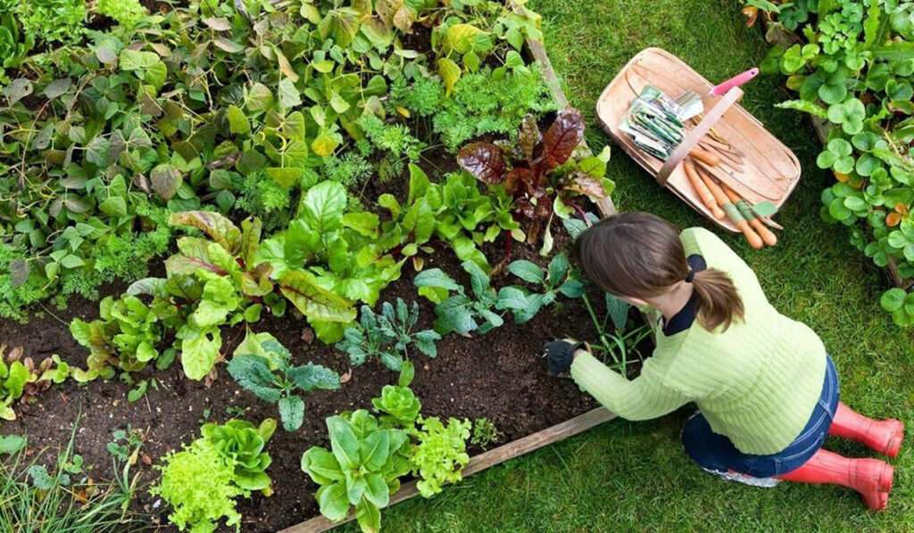

Bienvenido a Huerto Orgánico, tu destino para una vida más saludable y sostenible. En Huerto Orgánico, creemos en la importancia de cultivar alimentos frescos y deliciosos de manera natural, sin el uso de pesticidas ni productos químicos dañinos. Nuestro compromiso es ofrecer productos de la más alta calidad, cuidadosamente seleccionados para brindarte el mejor sabor y nutrición, al tiempo que protegemos el medio ambiente y promovemos prácticas agrícolas sostenibles.
La historia de Huerto Orgánico comenzó con una simple pasión por la naturaleza y la agricultura. Fundada en 2008 por un grupo de amigos entusiastas por la comida saludable y el medio ambiente, nuestra empresa se ha convertido en un referente en la producción y distribución de alimentos orgánicos. Desde nuestros humildes comienzos en un pequeño huerto familiar, hemos crecido y evolucionado para convertirnos en un líder en el sector de la agricultura orgánica.
En Huerto Orgánico, nuestra filosofía se basa en el respeto por la tierra y sus recursos naturales. Creemos en cultivar alimentos de manera responsable, utilizando prácticas agrícolas sostenibles que protejan la biodiversidad y promuevan la salud del suelo y los ecosistemas circundantes. Nos esforzamos por mantener la integridad de nuestros productos, desde la siembra hasta la cosecha, asegurando que cada cultivo sea tratado con el máximo cuidado y atención.
Nuestro compromiso con la calidad y la excelencia es inquebrantable. Nos esforzamos por ofrecer a nuestros clientes los mejores productos orgánicos disponibles en el mercado. Trabajamos en estrecha colaboración con agricultores locales y proveedores de confianza para garantizar la frescura y la pureza de nuestros alimentos en todo momento. Además, nos comprometemos a educar y empoderar a nuestra comunidad sobre los beneficios de una alimentación saludable y sostenible.
Detrás de Huerto Orgánico hay un equipo apasionado y dedicado de agricultores, científicos, chefs y amantes de la naturaleza. Nuestros expertos en agricultura orgánica están comprometidos con la innovación y la excelencia, trabajando incansablemente para producir alimentos de la más alta calidad y para inspirar un cambio positivo en el mundo. Nos enorgullece nuestro equipo y su dedicación a nuestra misión compartida de promover un estilo de vida más saludable y sostenible para todos.
Te invitamos a unirte a nosotros en nuestro viaje hacia un mundo más verde y saludable. Ya sea que estés interesado en comprar nuestros productos orgánicos, aprender más sobre la agricultura sostenible o simplemente compartir nuestra pasión por la comida fresca y saludable, ¡te damos la bienvenida a la familia de Huerto Orgánico!
Somos un equipo comprometido...